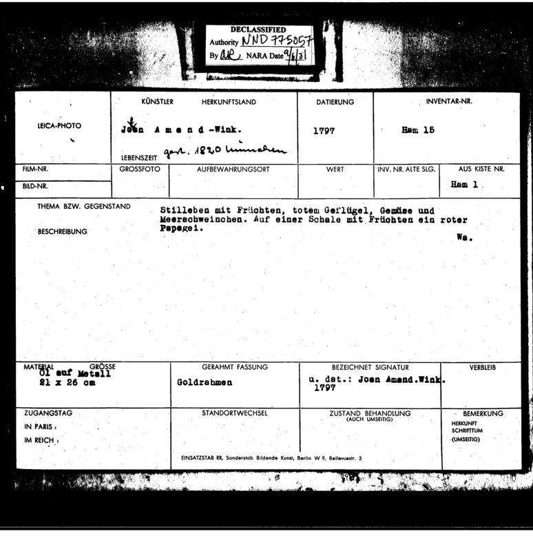

Solarized Histories: Archival Distortion as Afterlife and Redress in Lisa Oppenheim’s Spolia
Submitted in partial fulfillment of the requirements for the degree of Bachelor of Arts
in Art History at Barnard College, Columbia University.
Amelie Scheil
Advisor: Professor Rosalyn Deutsche
In 2024, Huis Marseille presented Spolia, the first institutional solo exhibition in the Netherlands by the Jewish-Amerian multimedia artist Lisa Oppenheim. Located in two seventeenth-century merchant houses on Amsterdam’s Keizersgracht canal, the photography museum provided an evocative setting for Oppenheim’s investigation of history, memory, and loss. The five-floor venue retains much of its original character: tall Dutch windows with natural light pouring in, a ceiling painting by Jacob de Wit, elaborate ceiling and staircase stucco work, and marble fireplaces decorate the various spaces. These interior details distinguish Huis Marseille from other enclosed, artificially lit exhibition spaces by staging the photographic works within an intimate, domestic setting.
Spolia was at home at the Huis Marseille. The intimate character of the museum serves not to just enhance our experience viewing the art but also to contextualize its subject matter. Oppenheim’s work concentrates on presumed missing looted artworks and objects that were once owned by dealers and collectors of Jewish descent in the Netherlands as well as collections of Dutch art looted from Jewish families elsewhere. Throughout this paper, I use the term looting to refer to cultural property taken through forced sales, direct seizure, and acts of intimidation—often under the pressure of imminent flight or persecution. During World War II, the Nazi regime implemented these strategies systematically as part of a broader effort to erase Jewish cultural presence and bolster a mythologized national German identity. This campaign extended to Dutch collections following the Nazi occupation of Amsterdam in May 1940. Among the most well-known of these losses is the collection of art dealer Jacques Goudstikker (1897–1940): Shortly after the Nazi invasion, Goudstikker and his family were forced to flee the Netherlands, leaving behind his large holding of artworks by Dutch Old Masters, which Nazi occupation forces later seized. Oppenheim’s Stilleven me Roemer, Nautilusschelp en Roos op een Donker Kleed, 1645-1655/2023 (Version I) references one such looted still life from Goudstikker’s holdings painted by Abraham van Beijeren. Other artworks such as Miroir entouré d’oiseaux, 1943/2022, invoke losses beyond the Netherlands, including the displacement of Jan Davidsz. de Heem’s titular still life from the Paris-based Schloss Collection. This system of intimidation, displacement, and dispossession funneled private collections and inventories into public Nazi art repositories where property could be cataloged, reclassified, and in some cases, destroyed. These invasions and loss of private ownership were only made more apparent by situating Spolia within a historical residence. Their presentation in the home highlights the impossibility of their return to the private space, reinvoking the violence of their forcible removal.
Oppenheim confronts these absences not through reconstruction, but through photographic transformation. Her long-standing interest in lost or obscured visual histories is evident in earlier works like Killed Negatives, After Walker Evans (2015), where she reimagines the inverse images of “killed” negatives from the Farm Security Administration’s photographic archive—photographs that were hole punched to indicate they would not be published or printed. In The Sun Is Always Setting Somewhere Else (2006), the artist uses Flickr-uploaded images of the setting sun taken by U.S. soldiers in Iraq that she reshoots by holding up the image at arm’s length to align with the New York sunset. In Spolia, she builds on the question of how to represent what no longer exists or is concealed by appropriating and manipulating photographic archives of looted artworks. Turning to the darkroom as a site of intervention, she uses her self-described “smoke” technique—solarizing prints by exposing them to flame—to transform the material.[1] The result is not a reconstitution of the original but a spectral image that carries the imprint of loss. These reimagined photographs function as both tribute and rupture: visual echoes of what was taken, distorted, and made anew.
By engaging with the full breadth of photography’s history, Oppenheim explores the interactions between the image, its source, and the context in which it is encountered. Her work concentrates on paintings, like Stilleven me Roemer, that were systematically looted, recorded, and transformed into archival documents by the Nazi task force, the Einsatzstab Reichsleiter Rosenberg (ERR). Spolia is in dialogue with this archive and the looted object whose fate the archive aims to “fix” through photographic documents, labels, and designations. Oppenheim approaches these documents, not as a neutral repository of memory, but as a structure of power—one that categorizes, erases, and reconfigures cultural knowledge of Jewish cultural achievement. She reenacts these archival distortions by imposing her artistic techniques—solarization, fragmentation, reflection, and repetition—onto the archival photograph, turning them into a material and conceptual tool for bearing witness to Jewish cultural erasure and redressing the historical violence of World War II. Rather than posing her works as surrogates for the original looted artworks, the artist uses her medium to expose the material, cultural, and emotional limits to reparative measures.
In Chapter 1, I investigate the provenance and Nazi archival documentation for the artwork referenced in the exhibition’s opening series, the ten-piece Miroir entouré d’oiseaux, 1943/2022. I argue that Oppenheim’s appropriation of ERR photographs draws directly from the archival system that facilitated the looting of Jewish-owned artworks. Through her techniques of solarization, cropping, and reflecting, Oppenheim mirrors the distortions and erasures enacted by the Nazi archive, transforming bureaucratic records into visual meditations on absence, loss, and the impossibility of return.
In Chapter 2, I extend the analysis of Oppenheim’s work by foregrounding repetition as a central visual and conceptual strategy. Drawing on Sigmund Freud’s theory of the uncanny, Jacques Derrida’s notion of hauntology, and Walter Benjamin’s idea of the artwork’s afterlife, I argue that Oppenheim’s images do not merely depict loss—they formalize its persistence. Her systematic use of artistic interventions transforms the archival photographs into haunted objects that resist closure. They invite the viewer to engage with cultural trauma not as a historical endpoint, but as an unresolved and reactivating force.
In the final chapter, I situate Spolia within broader debates about the ethics of archival representation by placing Oppenheim’s work in dialogue with Carrie Mae Weems’ From Here I Saw What Happened and I Cried and Martha Rosler’s The Bowery of Two Inadequate Descriptive systems. I argue that while both artists appropriate archival materials to critique systems of power, Oppenheim’s refusal to depict the human body points to an ethical strategy—one that mourns erasure through the object and resists the archival gaze through aesthetic defamiliarization.
Chapter 1: Archives of Absence—Looted Cultural Property and the Mediation of Memory
The Huis Marseille exhibition opens with the silver-gelatin series Miroir entouré d’oiseaux, 1943/2022 (Fig. 1). Comprising ten prints, the work repeats images of clouds overlaid with solarized fragments of a photographed painting. Each frame captures details of the original canvas: The profile of a bird’s head and floral decorations intimate a larger composition, but the distortion of any concrete narrative leaves the viewer with limitless possibilities (Fig. 2). The inversion of tones in the photograph, making the light areas appear dark and dark areas appear light, further dislocates the image from its source material, producing a view that is doubly unrecognizable to the viewer. When we look at the series, we are not looking at a painting, but instead two-dimensional suspensions in the sky—an otherworldly image that disturbs our sense of reality.
Lisa Oppenheim’s play with fragmentation and exposure suggests the nuances of what is seen and unseen. While the solarized fragments do not offer a clear narrative, the title of the series gives us a hint: Miroir entouré d’oiseaux was the title of a seventeenth-century painting by Jan Davidsz. de Heem (1606-1684) (Fig. 3), a painter born in Utrecht, Netherlands, best known for his Dutch and Flemish Baroque still lifes of flowers, opulent dinner tables, and vanitas. Many of his existing works, such as A Richly Laid Table with Parrots (ca. 1655) and Flowers in a Glass and Fruit (ca. 1665), feature similar bird and floral motifs. Miroir entouré d’oiseaux was included in the Schloss Collection, a group of over three hundred paintings that were seized by Nazi cooperatives as part of the systematic plunder of Jewish cultural property during World War II. Many of these paintings remain missing to this day, with only their archival photographs to remember them by.
Oppenheim investigates these despoiled paintings through archival research, tracing their database entries, photographic documentation, and provenances in the National Archives of Germany (Bundesarchiv). She appropriates and represents the photographs in her series, experimenting with chemical processes and photographic editing to imagine an entirely new existence for contemporary viewership. At the same time, her appropriations also point to their source: The title of the series references the original de Heem painting and marks the dates of both the Nazi seizure in 1943, and the work’s modern transformation by Oppenheim in 2022. The solarized fragments are scaled to mirror the dimensions of the original painting, reproducing how the original canvas was once viewed in person. And perhaps the most obscure of references, the cloud images that background each print were taken above 38 Avenue Henri Martir in Paris—the former family residence of German-French art collector Adolphe Schloss, from whom the painting was stolen.[2] Possibly a nod to Alfred Stieglitz’s Equivalents (1925-34) photographs, the locality of these cloud images engages with the emotionally evocative quality of the nonrepresentational, indirect reference to home and ownership. The series’ display in the Huis Marseille, a historic canal house turned photography museum, doubles down on the original painting’s connection to the home.
In Spolia, Oppenheim directly confronts strategies of cultural looting enacted by the Nazi regime. Through systemic theft, coercion, forced sales, and intimidation, the Nazi regime illegally confiscated property from its rightful owners; Jewish cultural achievement became loot for the regime’s public art exhibitions, auctions, and institutions, or was set to be destroyed. Nazi-instituted archives bear witness to this dispossession, documenting the physical removal of private property and legitimizing their new identity as public property. Through labels, codes, descriptions, and photographs, the Nazis organized records to inscribe and edit details about looted artworks, controlling what information was deemed valuable. Our reliance on their documentation to trace lost artworks only further stresses the archive’s authority over our knowledge of these objects today. The archive simultaneously produces a photographic trace of the object’s physical erasure and enforces an intellectual erasure by fixing the artwork’s meaning through standardized entries, like artist, owner, and date of seizure. By appropriating these archival materials in her series, Oppenheim demonstrates how archives and the processes they employ can shape what is seen and unseen, what is remembered and what is forgotten.
The Fate of the Schloss Collection
Much like the solarized details of Miroir entouré d’oiseaux, 1943/2022, our memory of the painting is fragmented. The Dutch painting was part of a collection built by Adolphe Schloss (1842-1910), a collector of German-Jewish descent who settled in Paris at the turn of the twentieth century. Known for its large holdings of Dutch and Flemish old masters—including Rembrandt, Frans Hals, and Gerard Dou—the Schloss Collection was highly regarded in the German art world. High-ranking Nazi officials took particular interest in it, seeing the works as potential assets for German art collections. In a diary entry by Hans Posse, the first director of Adolf Hitler’s planned Führermuseum in Linz, he notes that Schloss' heirs offered to sell the paintings for forty million francs ("Gefordert 40 Mill. fr.").[3]
As the Franco-German armistice of June 1940 approached, Schloss' children made arrangements to transfer their father’s collection from Paris to bank vaults in the Château de Chambon in Corrèze, hoping to safeguard the works.[4] But after the establishment of the Vichy regime in France, collaboration with Nazi authorities escalated. French officials participated in raids targeting Jewish art collectors and dealers, and Schloss' residence was among those ransacked. However, no paintings were discovered at the time. In the four-year collaboration between the Vichy regime and Nazi authorities, French authorities and residents became increasingly involved in efforts to locate and seize Jewish cultural assets. The creation of the Commissariat Général aux Questions Juives (CGQJ) in April 1941 marked a turning point, intensifying the Vichy regime’s role in the plunder. The search for the missing artworks came to an end on April 16, 1943, culminating in the seizure and dispersal of the Schloss Collection by the CGQJ and Nazi agents.[5]
The conflicting interests of French museum officials and Nazi agents led to the dismembering of the Schloss Collection. Following the seizure in Corrèze, the paintings were transferred to the Jeu de Paume in Paris—an exhibition space transformed into a storage for looted artworks—where the collection was sorted, cataloged, and photographed. At this moment of documentation, the paintings ceased to be personal or aesthetic objects and instead became classified entities in a broader bureaucratic system of knowledge. The Louvre, which had already asserted its right of preemption over parts of the collection, successfully acquired forty-nine Schloss paintings: Jean-François Lefranc, a primary figure in the hunt for Jewish art collections, remarked that this acquisition would “enrich [the Louvre’s] collection from the Dutch period with 49 top quality paintings, including one of the rare landscapes known to be by Rembrandt. I should also be congratulated since most of the paintings in this collection are going to the museums of a country with an old culture, our neighbor.”[6] The largest part of the collection—262 paintings—was transferred to Germany, where it was deposited at the Führerbau in Munich as part of Hitler’s grand vision for the Linz Museum.[7] The paintings remained untouched until April 1945, when local Munich residents raided the building, stealing over a thousand paintings.[8] Between 1945 and 1951, ninety-eight Schloss paintings were retrieved in and around the city and restituted to the family. But as far as is known, the paintings from the Schloss Collection that Oppenheim references disappeared after the Führerbau was ransacked.[9]
The Einsatzstab Reichsleiter Rosenberg (ERR)
The disappearance of the Schloss Collection is well documented. Under the jurisdiction of Alfred Rosenberg, the Einsatzstab Reichsleiter Rosenberg (ERR) was created as a specialized Nazi task force for acquiring artworks for Hitler’s proposed Führermuseum in Linz, Austria, and for Hermann Goering’s collection. These artworks also served Rosenberg’s pseudo-academic project to institutionalize anti-Semitic ideology under the guise of scholarly research. Within his cohort of scholars and specialists, Rosenberg sought to promote anti-Jewish studies under the aegis of the Institute for Research on the Jewish Question (IEJ) at the Hohe Schule in Frankfurt.[10] Rosenberg’s campaign of cultural dispossession and annihilation relied on a rigorous archival infrastructure to track, catalog, and redistribute property seized from bookstores, galleries, and personal collections.[11] These records were assembled into albums sent to Hitler as progress reports, known as the Rosenberg albums. After WWII, the albums were used as evidence in the Rosenberg trials, charging him for theft and plunder, as well as cultural genocide.[12]
The ERR meticulously cataloged their acquisitions, partly as a means of keeping order in their growing collection, but also to justify their activities and increase funding for the project. Objects were assigned unique ERR alphanumeric codes that reflected the collection owner’s name and other assigned designations for the collection. A typical registration card (Fig. 4) includes the artist’s name, date of creation, and a short description of the subject matter (Thema bzw. Gegenstand), as well as archival operations such as the box number, access status (Zugangstand), and change of location (Standortwechsel). These inventories usually started in the Jeu de Paume, but many were edited again once the collection was transferred to ERR repositories in the Reich. The ERR also photographed many of the items that were inventoried, providing visual reference to the written documentation. It is through these database entries that we can retrace the paths of artworks such as Miroir entouré d'oiseaux. Each movement is recorded down to the specific date and address: the painting’s “Intake place” at 38 Avenue Henri Martin in Paris; its transfer to the family’s bank vault at the Château de Chambon in Laguenne, Corrèze on August 20, 1939; as well as its various movements through art repositories in 1943, including the Banque Dreyfus and Jeu de Paume in Paris, and its export to the Führerbau in Munich.[13]
For many of the confiscated and documented artworks, these ERR archives are the extent records of their existence. The fate of looted artworks was left in the hands of Nazi investors and collectors who facilitated which artworks would eventually be incorporated into private and public collections, and those slated for destruction or to be sold internationally. Artworks that did not conform to the Nazis’ vision of “Aryan” aesthetics—modernist works, abstract styles, or anything by Jewish, Black, or leftist artists—were at risk of being labeled as Entartete Kunst (“degenerate art”). These works were seen not just as undesirable but as threats to the moral and cultural purity of the Reich. In an attempt to propagate a racialized cultural hierarchy, the Nazis exhibited many of these looted artworks in the 1937 defamatory show Degenerate Art in Munich. The exhibition was designed to vilify modernist tendencies, such as abstraction, expressionism, and surrealism, by framing them as symptoms of moral decay. The Nazi regime explicitly linked these artistic styles to mental illness and racial impurity, using pseudoscientific rhetoric to delegitimize entire movements. Some of the artworks included in the show were later destroyed; others, deemed internationally marketable, were sold through art dealers acting on behalf of the German government. The destruction or sale of these artworks is meticulously recorded in the ERR’s documentation: works marked for destruction were labeled “Vernichtet” (“destroyed”), often with a specified date, while those redirected for liquidation were noted with “zck. an M-Aktion zum Verkauf” (“returned to M-Aktion for sale”). In the case of artworks destined for the Führermuseum or other private collections, like Miroir entouré d'oiseaux, their disappearance is attributed to raids and the lack of documentation following WWII.
The ERR’s precise documentation of cultural loot, down to their date of destruction, continues to shape how we remember these artworks today. The first mediation was material: the physical removal or destruction of the object itself. The second is intellectual: the archive’s system of labeling and classification determines how these works are framed and understood in the present. The ERR did not record the works neutrally. Works that aligned with the Nazis’ aesthetic preferences or collecting ambitions were documented with greater care: full titles, artists’ names, dates, ownership history, and storage locations were often meticulously noted. The Schloss Collection, for instance, is exceptionally well documented because it was targeted for Hitler’s Führermuseum. In contrast, artworks deemed unworthy of preservation—such as modernist or “degenerate” works—were inconsistently recorded. A 1693 Adolf Eberle painting titled Männerporträt, confiscated from the Rothschild family, appears in the ERR inventory alongside nineteen other works with minimal detail (Fig. 5). Marked simply with “Vernichtet,” it lacks a photographic referent and provides no date of seizure.[14] The discrepancy between the documentation of Männerporträt and that of Miroir entouré d’oiseaux reveals the ERR inconsistencies. What was preserved, photographed, and described was determined by alignment with an “Aryan” aesthetic and political utility. In other records, titles and descriptive information were listed according to the best of the ERR’s knowledge. Oppenheim’s Pendant. Dekorative Vase mit bunten Blumen gefüllt (Fig. 9), for example, draws its title from one of two given ERR titles:
“Pendant. Dekorative Vase mit bunten Blumen gefüllt auf Postament mit Akanthusblattschmuck, an einer Treppe. Blick in Schloßgarten, Dunkelrote Portière, davor fliegender Papagei mit Rosenzweig. Oberer Rand des Bildes bogenförmig.”[15]
Here, the title is not taken from the original work, but rather treated as a description that captures the painting’s visual content. In the process, we lose the original title, the artist’s mark and key component in how word of the artwork could circulate. In this process, we lose not only the physical and visual traces of many artworks, but also vital information about their makers, histories, and journeys. This loss is a form of archival erasure that extends the violence of cultural looting into the realm of historical memory.
Archive as Power
The ERR’s archival practices demonstrate how archives function as mechanisms of power, shaping what could be remembered, valued, and preserved, and what was to be erased, stolen, or discarded. These decisions were not neutral or objective. The ERR selected artworks to record in their database according to certain purposes: to populate Hitler’s Führermuseum or private collections, to be publicly ridiculed in the Entartete Kunst Exhibition, and to institutionalize anti-Jewish studies. This process of collecting, sorting, and relocating artworks that fit into Hitler’s vision of a mythologized German national identity and destroying those that did not is racked with violence and loss. The archive functions as a site where memory, identity, and power intersect, serving as an oppressive determiner of knowledge that supports existing power structures.
Jacques Derrida breaks down how archives wield authority over our memory in Archive Fever. He begins his analysis with the etymology of the word “archive”: Its Greek root, arkhē, means both commencement and commandment, both an origin and an authority. Arkhē brings together these disparate principles, framing the archive as a physical, historical, and ontological site where knowledge begins and is also regulated:
“The concept of the archive shelters in itself, of course, this memory of the name arkhē. But it also shelters itself from this memory which it shelters: which comes down to saying also that it forgets it.”[16]
It is the nature of the archive to be authoritatively transparent about its origin but also to “forget” its power to record, hold, and lose memories. We turn to the archive to recover beginnings, origins, and inceptions that we believe to hold some truth. Our impulse to retrieve these memories, Derrida argues, is as much a practice of the human mind as it is an archaeological excavation. The unconscious is an archive that is established by the compulsion to archive every trace of memory. Archive fever is an attempt to control our “death drive,” the instinct to destroy, edit, and corrupt; in other words, it is the obsessed resistance to the threat of forgetfulness. This double gesture—of preserving and forgetting—is central to how archives function. They are not passive storehouses, but active systems of knowledge production, deciding what is preserved, what is discarded, and what counts as “truth.”
This notion is further clarified by Michael Foucault. He alludes to this exclusionary and oppressive system of knowledge in a 1996 interview, defining the archive as
“the set of discourses actually pronounced; and this set of discourses is envisaged not only as a set of events which would have taken place once and for all and which would remain in abeyance, in the limbo or purgatory of history, but also as a set that continues to function, to be transformed through history, and to provide the possibility of appearing in other discourses.”[17]
The archive is a system of statements that constitute a discourse, governing what can and cannot be said about it. Furthermore, Foucault asserts that the archive should not be taken as an immutable truth, but as evidence of power structures at work, allowing for such documents to be gathered and deemed worthy of safekeeping.[18] This archival assertion of knowledge works in both directions. Looted artworks destined for the Führermuseum shaped a German national identity and elevated “Aryan” aesthetics at the expense of the contributions of Jewish artists and curators. Simultaneously, the removal of cultural property from Jewish homes and establishments, and their subsequent omission, destruction, and reframing in institutions such as the IEJ at the Entartete Kunst exhibition, was designed to construct an inferior Jewish cultural identity. These two systems are interdependent: the Nazi vision of a mythologized German national identity could not exist without the simultaneous appropriation and erasure of Jewish cultural achievement. The archive was instrumental in constructing and legitimizing this racialized narrative.
As Josef Franz Knöpfler, the head of the Bavarian archival administration, observed, “There is no racial politics without archives, without archivists.”[19] This statement underscores the archive’s complicity in regimes of power: archives do not simply preserve the past—they authorize what can be known, remembered, and said about it. This enforcement of racial hierarchies through archives has a long and global history: From colonial recordkeeping to ethnographic photography, archival systems have been used to classify, dehumanize, and objectify racialized subjects. In Chapter 3, I examine Oppenheim’s work in relation to Carrie Mae Weems’ From Here I Saw What Happened and I Cried (Fig. 7). Weems’ rephotographing of Louis Agassiz’s daguerreotypes—created to support theories of polygenism and scientific racism—exposes how archival images have been used to legitimize racial hierarchies and bodily violence. In Nazi Germany, these archival practices reached their apex through a system that not only inventoried cultural objects for appropriation or destruction, but also codified lives into numbers, categories, and faceless entries in ledgers. The bureaucratic architecture of the Holocaust—census forms, transport lists, coded labels—relied on the archive to render violence legible and state-sanctioned.
The photograph plays an integral role in the archive; in fact, the two share a double relationship of mutuality. The ERR photograph acts as an archive in itself, a recorded fact of a spatial configuration at a given moment in time. At the same time, it relies on an archival order to give it meaning. The moment the ERR photograph was captured, the painting was transformed into a photographic subject. As Philip Monk observes, once the photograph is severed from its referent, it becomes “an empty cipher,” stripped of the context that originally gave it meaning:
“All contingency that we think natural to photography’s indexical registrations dissolved… All contingency was severed. This, I think, proves an archival problem to classify and house all these now homeless images.”[20]
These homeless images can no longer “cling to the spatial context that linked [them] with an original. The ERR archive transformed artworks into historical fragments—divorced from their owners, their homes, and their cultural context. To accommodate this loss of order, the photograph depends on the classifications of an imposed archival order—the ERR database.[21] At a high level, the ERR archival system performs as a place of transition from private to public, a site where the general (the rules or laws of classification) and the singular intersect to assign meaning to homeless images.[22] The painting flattened into a photographic subject takes on new meaning according to its archive.
Spolia and the ERR Archive
Oppenheim's appropriated photographs are not simply images of objects. They are symbolic remains—haunted by absence, loss, and historical violence. Their representation does not restore their original meanings but rather illuminates the impossibility of recovery. This impossibility is due to both the painting’s absence and its various archival interventions. Oppenheim addresses these physical and intellectual erasures in Spolia. First, she appropriates the photographic traces of artworks and the systems of knowledge they were subjected to. Second, she applies her artistic interventions of fragmentation, solarization, and reconfiguration to reenact the distortion of memory.
In Miroir entouré d’oiseaux, 1943/2022 (Fig. 1 and 2), Oppenheim uses various techniques to engage with the ERR archive. The use of the date “1943” references the year when the painting was seized from its rightful owner, Adolphe Schloss, during the Nazi occupation of France. This date serves as a marker of the violent disruption of cultural continuity and the severing of artworks from their historical contexts. The inclusion of the date of reproduction, “2022,” indicates that the painting, while physically lost, continues to haunt contemporary memory and art history. The juxtaposition of these two dates is crucial, highlighting the enduring impact of the Nazi archive's manipulations on our collective understanding of history. The use of the inventoried subject matter (Thema bzw. Gegenstand) further underscores how our identification of the painting is intercepted by ERR’s strategic documentation of looted artworks. These descriptions were not neutral; they were part of a system designed to liquidate cultural property into sortable archives that would allow German art investors to determine which pieces were valuable, and which were not.
Oppenheim’s use of solarized photographic fragments of the original painting draws attention to the ways in which the archival system distorts and fragments cultural memory. Looking at Miroir entouré d’oiseaux, 1943/2022, we recognize de Heems work only by the fragments of birds and florals the artist selects. But upon looking at the original ERR photograph, we see that these motifs frame a central component: a frame with a black, smudged surface, suggesting a mirror. This mirror raises questions: Is it painted? Or is there a painted frame around a reflective mirror? The black reflection suggests the former, but the dusty surface opens the possibility of a real object, or perhaps just exemplifies de Heem’s technical expertise. Our uncertainty on the matter is fixed by the painting’s physical absence, and the ERR record’s sparse description; the only information provided is its “Painting” medium and the title, which translates to “Mirror surrounded by birds.”[23]
Just as the mirror—painted or real—denies the viewer’s participation in the artwork, the ERR photograph enshrines this infinite distance from the temporal, physical object. Flattening the painting into subject matter, the photograph fixes the artwork’s function, or dysfunction, exactly as the ERR intended for looted cultural objects. But Oppenheim’s appropriation does something different. By omitting the central mirror, the artist conceals the original subject of the de Heem painting—reflection. Metaphorical or literal, reflection engages a subject, something or someone that it can reference and participate with. Across Spolia, the works reflect the viewer in the photographic space, in the same way that a mirror does. By incorporating this reflective property in her prints, Oppenheim restores this relationship between viewer and artwork, allowing them to participate in its latent history. In this sense, Spolia operates as both a critique and a counter-archive. By solarizing, cropping, fragmenting, and reflecting archival photographs of looted paintings, she both reveals and distorts their referents. The silver gelatin process, with its tactile depth and materiality, draws us into the experience of the archive not as a truth-telling object, but as a fragile, unstable system of memory.
Chapter 2: Repetition and Return: The Uncanny, Spectral History, and Afterlives
Spolia has an uncanny quality that arises from the photograph's capacity to manipulate, obscure, and forget memory. Across the exhibition works, Oppenheim experiments with solarization, fragmentation, and mirroring to reimagine ERR photographs, similar to how the archive dispossesses and reclassifies the looted artwork. Her systematic distortion of photographs produces a series of prints that are stylistically repetitive with their inverted, black-and-white tones. These alterations testify to a before image: Even if we do not know the referent’s original form, we are aware that a transformation has occurred. While artists like Andy Warhol also relied on photographic manipulation and stylistic repetition to critique contemporary culture, their works often depended on the viewer’s prior familiarity with the image. Warhol’s bright, colorful paintings and prints of subjects ranging from celebrities to everyday products rely on our recognition of pop cultural references to understand his work. Oppenheim’s Spolia complicates this relationship between the viewer and referent by reproducing photographs of artworks the modern viewer has likely never seen and may never encounter. At the same time, the artist draws upon a familiar artistic genre that viewers—especially Dutch viewers—at the Huis Marseille can recognize. It was in the Netherlands during the 1600s that the still life genre began to flourish; the term ‘still life’ originates from the Dutch word ‘stilleven.’ While the subject matter can vary greatly, from cartographic instruments to edible arrangements, they consistently feature inanimate objects that are intentionally arranged in a visually appealing composition. The artworks in Spolia are meticulously detailed such that we recognize them as real paintings, and repetitive enough that we feel we have seen something like it before.
By referencing a larger Dutch artistic tradition, while presenting us with still lifes that have been excised from our cultural memory, Oppenheim plays with the viewer’s visual memory and cultural literacy to reimagine images that are simultaneously familiar and unfamiliar. Freud defines this psychological experience as the uncanny (das Unheimliche):
“...the ‘uncanny’ is that class of the terrifying which leads back to something long known to us, once very familiar.”[24]
The uncanny occurs any time we are in a state of intellectual uncertainty, a feeling of unease that Freud links to the return of repressed infantile experiences. It is often triggered by repetition and doubles. These conditions evoke the fear of losing one's identity or being replaced by a deviant replica, a strategy Oppenheim is familiar with. Her black-and-white solarized inversions in Spolia produce a repetition of visually austere works that are also fragments of their original material. The photograph per se also plays with deviant replicas, with the potential for infinite reproductions. Walter Benjamin argues that this mechanical reproduction diminishes a work’s “aura”—its unique, ritualistic value—through its repetition.[25] This loss of aura goes hand-in-hand with the ERR archive, which participates in and facilitates the destruction of a unique artwork that once had a historical and spatial presence.
Visual uncanniness also mirrors the logic of the archive. As Philip Monk observes, once a photograph is severed from its referent, it becomes “an empty cipher,” stripped of the context that gave it meaning.[26] The ERR archive is full of these ciphers—images divorced from the artworks they once documented, now flattened into bureaucratic records.
On the surface, Spolia makes no visually explicit references to the cultural erasure and violence that took place during the Holocaust. The exhibition relies on our historical knowledge of Nazi cultural looting practices and a conceptual framework for understanding Oppenheim’s appropriations and reimaginations of ERR archival images. Yet, even without this context, her works can unsettle, disturb, and haunt. The uncanny becomes not just a psychological effect but a formal condition of historical haunting, where loss is not just in the past but persistently present. Rooted in the conceptual frameworks of Sigmund Freud’s The Uncanny, Jacques Derrida’s Specters of Marx, and Walter Benjamin’s notion of afterlives, this chapter investigates Oppenheim’s works as fragments charged with latent meaning. These are not restorative gestures, but affective reanimations: moments where the past historical traumas flicker back into view, altered, incomplete, but insistently present.
Hauntological Effects: The Holocaust as Specter
In Stilleven me Roemer, Nautilusschelp en Roos op een Donker Kleed, 1645-1655/2023 (Version I) (Fig. 6), Oppenheim employs her solarization technique to the point of rendering the subject almost invisible. We see the traces of a plate setting with a wine glass, vines, and grapes, but the treatment of light flattens the space. The viewer is left wondering what contours, shadows, and highlights were lost in the transformation process. But as far as digital archives go, there exists only a written record of Stilleven me Roemer tracing its provenance back to Jacques Goudstikker, a preeminent Jewish art dealer in Amsterdam whose collection was seized during the Nazi occupation. By rendering the painting’s absence visible, Stilleven me Roemer reveals both a visual and symbolic specter. The ghost-like traces of a past image haunt the surface of the print. At the same time, by resurfacing an image that bears witness to cultural destruction, the work summons a historical trauma—a consciousness that is neither fully present nor absent, neither dead nor alive. Jacques Derrida’s concept of hauntology, introduced in Specters of Marx, argues how the past, particularly lost or repressed cultural elements, continues to have a presence and influence in the present: “A ghost never dies, it remains always to come and to come-back.”[27] The specter can never be fully present but is still effective as a virtuality. In Spolia, the specter comes through in reminding us of the violent history tied to the referent. While the Holocaust is never directly shown, it is felt: It haunts through the appropriation of a violent archival system, the uncanny image, as well as the disjointed interplay of historical dates in the artwork’s title. By working with the same source material throughout the exhibition, Oppenheim repeatedly reenacts the past, invoking a spectral echo that reminds us how the past continues to shape the present. In this framework, the Holocaust functions as the ultimate specter: it cannot be neatly incorporated into a narrative of historical and cultural progress, and instead, it returns as a haunting force in Oppenheim’s work that unsettles the present, destabilizing our cultural memory. It lives in the distortion of form, the repetition of motifs, and the fragility of photographic traces in Spolia.
Afterlives
With its uncanny and hauntological effects, Spolia ultimately suggests that looted artworks do not simply disappear but rather they endure through their traces, their distortions, their recirculation within archival and artistic frameworks, and the memory of the Holocaust. These missing or destroyed works persist in what Walter Benjamin calls the artwork’s “afterlife”—their influence on other artists, cultural significance, and how it is remembered and interpreted over time:
“The concept of life is given its due only if everything that has a history of its own, and is not merely the setting for history, is credited with life… The history of the great works of art tells us about their antecedents, their realization in the age of the artist, their potentially eternal afterlife in succeeding generations.”[28]
Benjamin positions art within a continuum of experience in which meaning is accrued over time, passing through different periods and events. Looted artworks bear the subtle marks of these transformations, from the damages made during their physical seizure and movement through art repositories to their documentation in ERR archives. The archival photograph becomes another mark, a continuation of the looted artwork signaling a transformation of the physical object into a photographic subject. Derrida explains this archival continuity in Archive Fever: A Freudian Impression, arguing that the archive is not the origin, but a starting point for the represented:
“For while an archive may not be an end, it is only a beginning. It is not the beginning, and it never contains its own beginning. It can only be a translation of its conception.”[29]
In this sense, Spolia performs as the next translation of the looted artwork by appropriating this archival system. The paintings do not just influence her work but are the mechanism through which she makes a refusal statement to seal the violence of the Holocaust with cultural closure. With each solarization, fragmentation, reflection, and repetition, she repositions the artwork, emphasizing or distorting certain visual or thematic aspects of the work’s ontology. Oppenheim’s work reactivates the latent histories embedded in the images by foregrounding the uncanny and the spectral to unsettle our cultural memory.
The spectral logic of Oppenheim’s images reveals how the looted artwork becomes a vessel for the unresolved, the obscured, and the unspoken. Spolia embraces aesthetic strategies of repetition, distortion, and erasure to evoke the trauma of absence and the persistence of historical violence. This form of artistic reimagining stands in contrast to conventional practices of restitution, which often aim to reinsert cultural objects into legal or institutional frameworks of ownership. But such efforts, while necessary in some cases, can never fully account for what has been lost—whether materially, culturally, or emotionally—nor can they restore the ruptured contexts of personal meaning and belonging. In this light, Spolia rejects the logic of restoration in favor of a more radical proposition: that cultural memory survives through synthetic reimagination. By offering new, speculative forms for what has vanished, Oppenheim makes space for it to be felt, reactivated, and critically engaged in the present.
Chapter 3: Comparing Strategies of Redress in Spolia and Carrie Mae Weems’ From Here I Saw What Happened And I Cried
In her 2019 article, “Carrie Mae Weems: Rethinking Historical Appropriations,” Cherise Smith addresses the divided response to the Weems’ reference to violent photographs in the artist’s series From Here I Saw What Happened and I Cried (1995) (Fig. 7). Weems rephotographed daguerreotypes of slaves from a South Carolina plantation that were commissioned in the mid-1800s by Harvard polygenism-theorist Louis Aggassiz, photographs that have been stored at Harvard’s Peabody Museum of Archaeology and Ethnology. In a breach of contract with the Peabody, Weems reprinted the photographs for her series, sparking an intense debate over legal concerns of copyright infringement and contested ownership. Despite not having a legal case, Weems encouraged the Harvard lawsuit as an opportunity for a moral trial. Harvard did not follow through with the lawsuit and ended up acquiring Weems’ series, an event that earned From Here I Saw What Happened and I Cried its status as a postmodern nexus for institutional critique and dialogues of restitution. Weems’ works are often interpreted as a subversion of visual stereotypes of black people to commemorate their lives and experiences, and restore their subjectivity.[30] However, the ethical dilemma of her work still lingers. Smith argues that the series launched a recirculation and reconsumption of these images, whose violent narratives hold out against postmodern interventions. Further, Smith writes,
“I want to question the use of the archive to critique archival methods, reconsider the recirculation and indeed reconsumption of these images. I want to consider whether African American subjectivity can be reconstituted and re-membered through a process that mirrors the strategies of institutions and borrows, perhaps unwittingly, from its power. Eventually, I want to suggest that it is not through institutional critique or claims to realism, but through synthetic reimagining, that we can begin to project ourselves into a position of understanding the historical trauma to black people.”[31]
Smith’s critique of postmodern engagement with archival methods, the notion of “reconstituting” and “re-membering” subjectivity, and her proposal for “synthetic reimagining” will serve as the framework for this chapter. For, like Weems, Lisa Oppenheim engages with ideas of reconstituting and re-membering memory by rephotographing, solarizing, and reprinting artworks that have been lost or destroyed. While Weems’ work raises the question about whether it is harmful to recirculate violent archives, this chapter does not seek to counterpose Spolia to From Here I Saw What Happened, to suggest that Oppenheim’s work is the safe or correct approach to this archival dilemma. Rather, this chapter aims to pinpoint the varied receptions of these postmodern works by identifying and distinguishing the artists’ distinct approaches to archival appropriation and mediation. Expanding on Smith’s critique, I will begin with the ethics of representing trauma, examining historical representations and comparing the visual content between Oppenheim’s and Weems’ series. I will investigate differences in representing human subjects versus inanimate objects, and the limitations in Oppenheim’s work with falsely equating the destruction of an artifact with the destruction of people.
The absence of human subjects in Spolia will be explored through the lens of Martha Rosler’s “In, Around, and Afterthoughts (on Documentary Photography)” and her accompanying work, The Bowery of Two Inadequate Descriptive Systems (Fig. 8), incorporating a discussion about the photo-documentary practice of representing others. This chapter will argue that Oppenheim’s archival interventions—curation, solarization, cropping, and strategic framing—transform looted artworks into symbols of loss, violence, and resistance. This approach, while evocative of the inherent violence of archival methods, simultaneously creates a space to mourn and critique, setting it apart from Weems’ attempt to redress and restore subjectivity through bodily reappropriation.
The Ethics of Representing the Body/Trauma
Jean-Francois Lyotard argues that contemporary culture defined by the postmodern condition is characterized by an “incredulity toward metanarratives.”[32] These overarching frameworks of knowledge, designed to organize and explain human experiences, are coercive in their universalizing ambitions, often failing to recognize the diversity of individual and collective histories. Gayatri Spivak expands this critique, arguing that Western philosophy and academic discourse have historically perpetuated systems of oppression, particularly in their representations of marginalized groups.[33] This raises the question central to this chapter: How can trauma be represented ethically without reinscribing the violence of its original conditions?
Carrie Mae Weems' From Here I Saw What Happened and I Cried (1995-96) is crucial to this dialogue. By appropriating and reconfiguring daguerreotypes of slaves, Weems exposes the racialized gaze embedded in these early photographic documents. “When we’re looking at these images, we’re looking at the ways in which Anglo America—white America—saw itself in relationship to the Black subject,” Weems commented on the heterogeneous materials.[34] The artist rephotographed the daguerreotypes of subjects that Agassiz’s labels identify as “Delia,” “Jack,” “Renty,” and “Drana.”[35] She enlarged the prints, cropping them into a portrait circular shape and tinting the images red. The affective charge of red tint—a color synonymous with violence, rage, and bloodshed—alludes to violence that has taken place. Weems inscribes the profile images with white boldface words that confront the viewer with the violence of racial classification. Drama’s image is labeled with You Became a Scientific Profile, Renty’s with A Negroid Type, and Delia’s with & A Photographic Subject.[36] The artist’s interventions both visually and conceptually interrupt our view of the original material, challenging a passive absorption of the images by the viewer.
Scholars have debated whether this act of recirculating violent imagery serves to reclaim subjectivity or perpetuates the same traumatic gaze. We have heard Cherise Smith argue that Weems' work risks reinscribing the violence it seeks to critique, as the images remain entangled with their oppressive history. About Weems’ white boldface text, Smith argues that Weems’ interventions cater to an insider, culturally literate audience. The artist, says Smith, “like archival collections, narrativizes disparate images that are… most poignant and powerful as fragments that testify to their prior, broken histories.”[37] At the heart of Smith’s critique of From Here I Saw What Happened is a recognition of the slave body as what Saidiya Hartmann calls an “eroding witness”:
“...the body is both the “eroding witness” to this history of terror and the object of redress. Obviously, the body broken by the regime of work, the regularity of punishment, the persistence of torture, and the violence of rape and sexual exploitation is in dire need of restitution. Yet the very conditions that have produced the broken and disciplined body and the body as object, instrument, and commodity ensure that the work of restoration or recompense is inevitably incomplete. The limited means of redress available to the enslaved cannot compensate for the enormity of this loss; instead, redress is itself an articulation of loss and a longing for remedy and reparation. It is impossible to fully redress this pained condition without the occurrence of an event of epic and revolutionary proportions--the abolition of slavery, the destruction of a racist social order, and the actualization of equality.”[38]
In her book Scenes of Subjection: Terror, Slavery, and Self-Making in Nineteenth-Century America, Hartmann explains how slavery and the racist social order have produced a “broken body” that cannot be fully restituted or recompensed. The concept of “redress” acknowledges this limit to reparative measures. Recognizing the incompleteness of rectifying historical violence, redress offers a space for trauma and violence to be recognized, and articulated, and to open up new responses to the past.[39]
Through the re-presentation of looted artworks, Oppenheim engages with a violent history of Jewish cultural erasure that is concurrent with the erasure of Jewish people. Clearly, this paper does not attempt to equate violence towards artworks to violence towards people. Instead, this chapter argues that Oppenheim’s choice to represent inanimate objects, rather than represent the eroding witness, is an awareness—conscious or unconscious—that the objectification of the human body and its commodification through the circulation of archives is a sensitive and divisive issue. In turning to looted artworks, Oppenheim instead focuses on critiquing the Nazi-instituted archival system that has classified, consigned, and destroyed not just Jewish cultural property, but extended its archival violence to Jewish people.
Object, Body, and Absence
While the Nazi regime prized grand landscapes and realism in looted artworks, Oppenheim’s focus on the visually repetitive genre of still lives and landscapes in Spolia is a deliberate choice. The Jewish Digital Cultural Recovery Project database reveals that the Schloss Collection contains not only lush bouquets and edible arrangements but also domestic scenes, portraiture, and depictions of children. Yet, these human elements are completely absent in Oppenheim’s work. Her exclusion even goes as far as removing people. In Pendant. Dekorative Vase mit bunten Blumen gefüllt, 1942/2022 (Version I) (Fig. 9 and 10), the artist purposefully crops a young girl out of the scene, leaving only the hint of her hand in the lower left corner. The curation of inanimate subjects in Spolia can be illuminated by Martha Rosler’s critique of documentary photography. In her essay “In, Around, and Afterthoughts (on Documentary Photography),” Rosler examines how the medium has historically been employed by the socially powerful to document and control the narratives of marginalized groups. Iconic images by Walker Evans and Dorothea Lange—notably, Lange’s Migrant Mother—serve as evidence of photography’s dual capacity to reveal and reinscribe social hierarchies. Social documentary photography has circulated so-called “raw” and “truthful” images, undergirded with the notion that marginalized groups cannot save themselves.[40] Addressing this history, Rosler asks: Who has the ability and means to represent whom, and how do those representations signify?
Oppenheim is familiar with this documentary history: In her series Killed Negatives, After Walker Evans (2015), the artist reconstitutes images from film negatives that were “killed” by punching holes into them to prevent their printing. The artist set out to reconstruct these images by rephotographing the missing section, often traveling to the photo’s original location. Her process of cropping and aligning the images to mimic the negative space of the heterogeneous material does not resurrect the image, as she performs inverse censorship on her photography. Rather, it unfolds an exploration of what might have been lost, with each “possibility” presented on a different frame.
Rosler challenges the authority of the documentary photograph in her photo-text work The Bowery in Two Inadequate Descriptive Systems (Fig. 8). She produced twenty-four diptychs combining images and text to interrogate earlier documentation of Manhattan’s run-down Bowery neighborhood. Rather than repeating a tradition of photographing disenfranchised communities through a sentimental or voyeuristic gaze, Rosler captures Bowery storefronts littered with the lingering traces of human presence: trash on the sidewalks, dried-out glass bottles, cigarette packs, and abandoned shoes. Each image is paired with typewritten words associated with drunkenness:
“in one’s cup / under the influence / liquored up, tanked up / juiced up, slopped up, sloppy / bloated, loaded, full.”[41]
The written drunken terms fill in for the absence of the figures themselves; similarly, the photographic representation signals the viewer to draw an association between inebriation and a specific place. Rosler’s pairing of these two forms of representation highlights their “inadequacy” as descriptions of a complex social problem.
With the help of Rosler’s “In, Around, and Afterthoughts” and her Bowery series, the human absence in Spolia can be approached as a refusal of inadequate, detached, and violent representations of the Holocaust, and a way of turning attention outward to the looted painting as a photographic subject as an object of archival classification. Oppenheim’s silver gelatin plates capture a range of domestic and natural elements such as cartographic instruments, floral and edible arrangements, shells, and birds. When we take into account that these images are, in fact, photographs of paintings, our attention is drawn away from the subject of the painting and towards the painting-as-subject. The monotonous and vacant quality of Oppenheim’s treatment of the still life image further deters us from interpreting its meaning. But as in Rosler’s The Bowery, human absence haunts us in Spolia; the painting-as-subject adds a second layer to this absence, as it is itself a trace of human ownership.
When discussing the history of looting, classifying, consigning, and destroying artworks, it is impossible to ignore the simultaneous genocide of Jewish people. Ernst van Alphen explains how, under the Nazi regime, Jewish individuals were not only robbed of their cultural property but were systematically transformed into archival objects—stripped of their humanity and reduced to bureaucratic entries.[42] This process of dehumanization is vividly demonstrated in Resnais’ Night and Fog, where archival aesthetics and haunting imagery lay bare the mechanized documentation of extermination, underscoring how the regime’s archival practices functioned as instruments of violence.[43] By drawing attention to this dehumanizing process, Oppenheim’s Spolia is a meta-critical intervention. Its deliberate omission of human figures critiques an archival system that has historically commodified both cultural artifacts and human lives, inviting us instead to confront the trauma and absence left by such systematic erasure.
Conclusion
Lisa Oppenheim’s Spolia is not a work of restoration—it is a meta-critical intervention into the violence of archival systems and the limits of historical redress. This paper has examined how Oppenheim appropriates and disrupts the bureaucratic infrastructure of Nazi documentation through a series of precise visual strategies. In Chapter 1, I argued that Oppenheim engages the ERR archive by using formal interventions—solarization, cropping, and reflection—to expose the mechanisms of classification and erasure at the core of Nazi cultural looting. These techniques do not retrieve what was lost; rather, they mirror and distort the archive’s own distortions, transforming it into a site of instability and rupture.
In Chapter 2, I turned to Oppenheim’s use of repetition as a central formal and conceptual device. Drawing on Freud’s theory of the uncanny and Derrida’s notion of hauntology, I examined how Spolia dislodges its source material from historical closure and resituates it as a spectral return. These artworks do not mourn the past through commemoration; they haunt the present through disruption. Repetition becomes a strategy of refusal—refusing the archive’s authority and the possibility of full restitution.
In the final chapter, I explored the ethics of archival representation through a comparative analysis of Oppenheim’s Spolia and Carrie Mae Weems’ From Here I Saw What Happened and I Cried. While Weems intervenes in the racialized archive by reasserting the Black subject, Oppenheim removes the human figure entirely, turning instead to the still life and the object. Her refusal is an ethical strategy—one that critiques the visual economies through which bodies have historically been commodified, recorded, and erased. In this context, Oppenheim’s representation is a challenge to the archive’s complicity in both cultural and physical violence.
Spolia is more than an exhibition—it is an act of critical witnessing. By appropriating the very materials that once served to legitimize cultural theft, Oppenheim refuses the archival logic: She replaces the archive’s claim to objectivity with visual ambiguity, inviting viewers to dwell in uncertainty. Spolia presents a model for confronting historical violence through conceptual rupture. While Oppenheim does not resolve the trauma of cultural looting, her work reanimates it through her solarized images. Through archival distortion and spectral repetition, the artist reimagines a haunted terrain where history resists containment—where the past returns not to be resolved, but to demand ethical reckoning.
Illustrations
Figure 1. Lisa Oppenheim, Miroir entouré d’oiseaux, 1943/2022, 2022.
Figure 2. Lisa Oppenheim, Miroir entouré d’oiseaux, 1943/2022, detail, 2022.
Figure 3. Registration card photograph for Jan Davidsz. de Heem, Miroir entouré d'oiseaux, c.1650–1700.

Figure 4. Registration card and photograph for Johann Amand-Wink’s Stilleben mit Früchten, totem Geflügel, Gemüse und Meerschweinchen, 1797. Archive from the Database of Art Objects at the Jeu de Paume.
Figure 5. Registration card and photograph for Männerporträt, 1797. Archive from the Database of Art Objects at the Jeu de Paume.
Figure 6. Lisa Oppenheim, Stilleven me Roemer, Nautilusschelp en Roos op een Donker Kleed, 1645–1655/2023 (Version I), 2023.
Figure 7. Carrie Mae Weems, From Here I Saw What Happened And I Cried, 1995–96.
Figure 8. Martha Rosler, The Bowery in two inadequate descriptive systems, 1974–1975.
Figure 9. Lisa Oppenheim, Pendant. Dekorative Vase mit bunten Blumen gefüllt, 1942/2022 (Version I), 2022.

Figure 10. Registration card photograph for Johann Baptist Blain de Fontenay(?), Pendant..., end of the 17th century.
Bibliography
Alphen, Ernst van. Staging the Archive: Art and Photography in the Age of New Media. London: Reaktion Books, 2014.
Benjamin, Walter. “The Task of the Translator.” Translated by Harry Zohn. In The Translation Studies Reader, edited by Lawrence Venuti, 15–25. London: Routledge, 2000.
Callahan, Sara. Art + Archive: Understanding the Archival Turn in Contemporary Art. Rethinking Art’s Histories. Manchester: Manchester University Press, 2022.
Derrida, Jacques. Archive Fever: A Freudian Impression. Translated by Eric Prenowitz. Chicago: University of Chicago Press, 1996.
Derrida, Jacques. Specters of Marx: The State of the Debt, the Work of Mourning, and the New International. Translated by Peggy Kamuf. New York: Routledge, 1994.
“Einsatzstab Reichsleiter Rosenberg (ERR).” Cultural Plunder by the Einsatzstab Reichsleiter Rosenberg: Database of Art Objects at the Jeu de Paume. ERR Project, 2024. https://www.errproject.org/jeudepaume/about/err.php (accessed December 10, 2024).
Einsatzstab Reichsleiter Rosenberg (ERR). “Männerporträt.” Cultural Plunder by the Einsatzstab Reichsleiter Rosenberg: Database of Art Objects at the Jeu de Paume. https://www.errproject.org/jeudepaume/card_view.php?CardId=51677 (accessed April 22, 2025).
Einsatzstab Reichsleiter Rosenberg (ERR). “Miroir entouré d'oiseaux.” Cultural Plunder by the Einsatzstab Reichsleiter Rosenberg: Database of Art Objects at the Jeu de Paume. https://www.errproject.org/jeudepaume/card_view.php?CardId=51677 (accessed April 22, 2025).
Ernst, Wolfgang. “Archival Action: The Archive as ROM and its Political Instrumentalization under National Socialism.” History of the Human Sciences 12, no. 2 (1999): 13-24.
“Fate of the Schloss Collection.” Jewish Digital Cultural Resource Project. JDC. https://pilot-demo.jdcrp.org/essays/fate-of-the-schloss-collection/ (accessed December 10, 2024).
Foucault, Michel. Foucault Live: Collected Interviews, 1961–1984. Edited by Sylvere Lotringer. 2nd ed. New York: Semiotext(e), 1996.
Foucault, Michel. The Archaeology of Knowledge and the Discourse on Language. Translated by A. M. Sheridan Smith. New York: Pantheon Books, 1971.
Freud, Sigmund. The Uncanny. Translated by David McLintock. Introduction by Hugh Haughton. London: Penguin Books, 2003.
Hartman, Saidiya V. Scenes of Subjection: Terror, Slavery, and Self-Making in Nineteenth-Century America. New York: Oxford University Press, 1997.
Lawlor, Leonard, and John Nale, eds. The Cambridge Foucault Lexicon. Cambridge: Cambridge University Press, 2014.
Lyotard, Jean-François. The Postmodern Condition: A Report on Knowledge. Translated by Geoff Bennington and Brian Massumi. Manchester: Manchester University Press, 1984.
Monk, Philip. Disassembling the Archive: Fiona Tan. Toronto: Art Gallery of York University, 2007.
Murray, Yxta Maya. “From Here I Saw What Happened and I Cried: Carrie Mae Weems’ Challenge to the Harvard Archive.” Unbound 8, no. 1 (2013): 1-79.
Oppenheim, Lisa. Artist statement for “Smoke.” Prix Pictet, 2021. https://prix.pictet.com/cycles/fire/lisa-oppenheim.
Oppenheim, Lisa. Wall text for “Schloss Collection.” Spolia. Huis Marseille, Amsterdam, March 16 2024–June 16, 2024.
Owens, Craig. “The Discourse of Others: Feminists and Postmodernism,” In Beyond Recognition: Representation, Power and Culture, edited by Scott Bryson, Barbara Kruger, Lynne Tillman, and Jane Weinstock. 166-190, Berkeley: University of California Press, 1992.
Owens, Craig. “The Indignity of Speaking for Others,” In Beyond Recognition: Representation, Power and Culture, edited by Scott Bryson et al., 259-262. Berkeley: University of California Press, 1992.
“Reclaimed: Paintings from the Collection of Jacques Goudstikker.” The Contemporary Jewish Museum. October 29, 2010–March 29, 2011. https://www.thecjm.org/exhibitions/36. (accessed April 1, 2025).
Raymond, Claire. “The Crucible of Witnessing: Projects of Identity in Carrie Mae Weems’s From Here I Saw What Happened and I Cried.” Meridians 13, no. 1 (2015): 26–52.
Rosler, Martha. “In, Around, and Afterthoughts (On Documentary Photography)” In 3 Works: Critical Essays on Photography and Photographs, 75-102. Halifax.: The Press of the Nova Scotia College of Art and Design, 1981.
Smith, Cherise. “Carrie Mae Weems: Rethinking Historical Appropriations.” Journal of Contemporary African Art, no. 44 (2019): 38-50.
Smith, Cherise. “Fragmented Documents: Works by Lorna Simpson, Carrie Mae Weems, and Willie Middlebrook at the Art Institute of Chicago,” Museum Studies 24, no. 2 (1999): 244–59, 271–72.
Spivak, Gayatri Chakravorty. "Can the Subaltern Speak?" In Marxism and the Interpretation of Culture, edited by Cary Nelson and Lawrence Grossberg, 271–313. Chicago: University of Illinois Press, 1988.
“1940-10: Posse First Diary Entry.” Jewish Digital Cultural Resource Project. JDC. https://pilot-demo.jdcrp.org/event/1940-10-posse-first-diary-entry/ (accessed December 12, 2024).
Wasiuta, Mark. “The Architecture of Dispossession.” In Afterlives: Recovering the Lost Stories of Looted Art, by Darsie Alexander and Sam Sackeroff, with essays by Julia Voss and Mark Wasiuta, 107-123. New York: Jewish Museum; New Haven: Yale University Press, 2021.
Weems, Carrie Mae. Audio interview for MoMA 2000: Open Ends, The Museum of Modern Art and Acoustiguide, Inc., 2000.
[1] Lisa Oppenheim, “Smoke,” Prix Pictet, 2021, https://prix.pictet.com/cycles/fire/lisa-oppenheim.
[2] Lisa Oppenheim, wall text for Schloss Collection, Spolia, Huis Marseille, Amsterdam, March 16–June 16, 2024.
[3]“1940-10: Posse First Diary Entry,” Jewish Digital Cultural Resource Project (JDC), https://pilot-demo.jdcrp.org/event/1940-10-posse-first-diary-entry/.
[4]“Fate of the Schloss Collection,” Jewish Digital Cultural Resource Project (JDC), https://pilot-demo.jdcrp.org/essays/fate-of-the-schloss-collection/.
[5] Ibid.
[6] Ibid.
[7]“Einsatzstab Reichsleiter Rosenberg (ERR),” Cultural Plunder by the Einsatzstab Reichsleiter Rosenberg: Database of Art Objects at the Jeu de Paume, ERR Project, 2024, https://www.errproject.org/jeudepaume/about/err.php.
[8] Ibid.
[9] Lisa Oppenheim, wall text for “Schloss Collection.”
[10] “Einsatzstab Reichsleiter Rosenberg (ERR),” Cultural Plunder by the Einsatzstab Reichsleiter Rosenberg.
[11] Ibid.
[12]Mark Wasiuta, “The Architecture of Dispossession,” in Afterlives: Recovering the Lost Stories of Looted Art, by Darsie Alexander and Sam Sackeroff, with essays by Julia Voss and Mark Wasiuta (New York: Jewish Museum; New Haven: Yale University Press, 2021), 112.
[13]Einsatzstab Reichsleiter Rosenberg (ERR), “Miroir entouré d'oiseaux,” Cultural Plunder by the Einsatzstab Reichsleiter Rosenberg: Database of Art Objects at the Jeu de Paume, https://www.errproject.org/jeudepaume/card_view.php?CardId=51677 (accessed April 22, 2025).
[14] Einsatzstab Reichsleiter Rosenberg (ERR), “Männerporträt,” Cultural Plunder by the Einsatzstab Reichsleiter Rosenberg: Database of Art Objects at the Jeu de Paume, https://www.errproject.org/jeudepaume/card_view.php?CardId=51677 (accessed April 22, 2025).
[15] Einsatzstab Reichsleiter Rosenberg (ERR), “Pendant. Dekorative Vase mit bunten Blumen gefüllt,” Cultural Plunder by the Einsatzstab Reichsleiter Rosenberg: Database of Art Objects at the Jeu de Paume, https://www.errproject.org/jeudepaume/card_view.php?CardId=3708 (accessed April 22, 2025).
[16] Jacques Derrida, Archive Fever: A Freudian Impression, trans. Eric Prenowitz (Chicago: University of Chicago Press, 1996), 9.
[17] Michel Foucault, Foucault Live: Collected Interviews, 1961–1984, ed. Sylvere Lotringer, 2nd ed. (New York: Semiotext(e), 1996).
[18] Leonard Lawlor and John Nale, eds., The Cambridge Foucault Lexicon (Cambridge: Cambridge University Press, 2014).
[19] Wolfgang Ernst, “Archival Action: The Archive as ROM and its Political Instrumentalization under National Socialism,” History of the Human Sciences 12, no. 2 (1999): 13–24.
[20] Philip Monk, Disassembling the Archive: Fiona Tan, (Toronto: Art Gallery of York University, 2007), n.p.
[21] Ernst van Alphen, Staging the Archive: Art and Photography in the Age of New Media (London: Reaktion Books, 2014), 29.
[22] Ibid, 54.
[23] Einsatzstab Reichsleiter Rosenberg (ERR), “Miroir entouré d'oiseaux,” Cultural Plunder by the Einsatzstab Reichsleiter Rosenberg.
[24]Sigmund Freud, The Uncanny, trans. David McLintock, intro. Hugh Haughton (London: Penguin Books, 2003), 1.
[25] Walter Benjamin, “The Task of the Translator,” trans. Harry Zohn, in The Translation Studies Reader, ed. Lawrence Venuti (London: Routledge, 2000), 25.
[26] Monk, Disassembling the Archive: Fiona Tan, n.p.
[27] Jacques Derrida, Specters of Marx: The State of the Debt, the Work of Mourning, and the New International, trans. Peggy Kamuf (New York: Routledge, 1994), 123.
[28] Walter Benjamin, “The Task of the Translator,” trans. Harry Zohn, in The Translation Studies Reader, ed. Lawrence Venuti (London: Routledge, 2000), 70.
[29]Jacques Derrida, and Eric Prenowitz, Archive Fever: A Freudian Impression. Pbk. ed. Religion and Postmodernism. Chicago [Ill.]: University of Chicago Press, 1998, pp. 109.
[30] Claire Raymond, “The Crucible of Witnessing: Projects of Identity in Carrie Mae Weems’s From Here I Saw What Happened and I Cried,” Meridians 13, no. 1 (2015).
[31] Cherise Smith, “Carrie Mae Weems: Rethinking Historical Appropriations,” Journal of Contemporary African Art, no. 44 (2019): 46.
[32]Jean-François Lyotard, The Postmodern Condition: A Report on Knowledge, trans. Geoff Bennington and Brian Massumi (Manchester: Manchester University Press, 1984): xxiii–xxiv.
[33] Gayatri Chakravorty Spivak, "Can the Subaltern Speak?" in Marxism and the Interpretation of Culture, ed. Cary Nelson and Lawrence Grossberg (Chicago: University of Illinois Press, 1988), 271–313.
[34] Carrie Mae Weems, audio interview for MoMA 2000: Open Ends, The Museum of Modern Art and Acoustiguide, Inc., 2000.
[35] Yxta Maya Murray, “From Here I Saw What Happened and I Cried: Carrie Mae Weems’ Challenge to the Harvard Archive,” Unbound 8, no. 1 (2013): 3.
[36] Ibid.
[37] Cherise Smith, “Carrie Mae Weems: Rethinking Historical Appropriations,” 49.
[38] Saidiya V. Hartman, Scenes of Subjection: Terror, Slavery, and Self-Making in Nineteenth-Century America (New York: Oxford University Press, 1997): 117.
[39] Ibid.
[40]Martha Rosler, “In, Around, and Afterthoughts (On Documentary Photography)” 3 Works: Critical Essays on Photography and Photographs. Halifax, N.S.: The Press of the Nova Scotia College of Art and Design, 1981, 79.
[41] Martha Rosler, The Bowery in two inadequate descriptive systems. 1974-1975, gelatin silver prints. Museum of Modern Art, New York.
[42] Ernst van Alphen, Staging the Archive: Art and Photography in the Age of New Media, London: Reaktion Books, 2014: 207-9.
[43] Ibid.